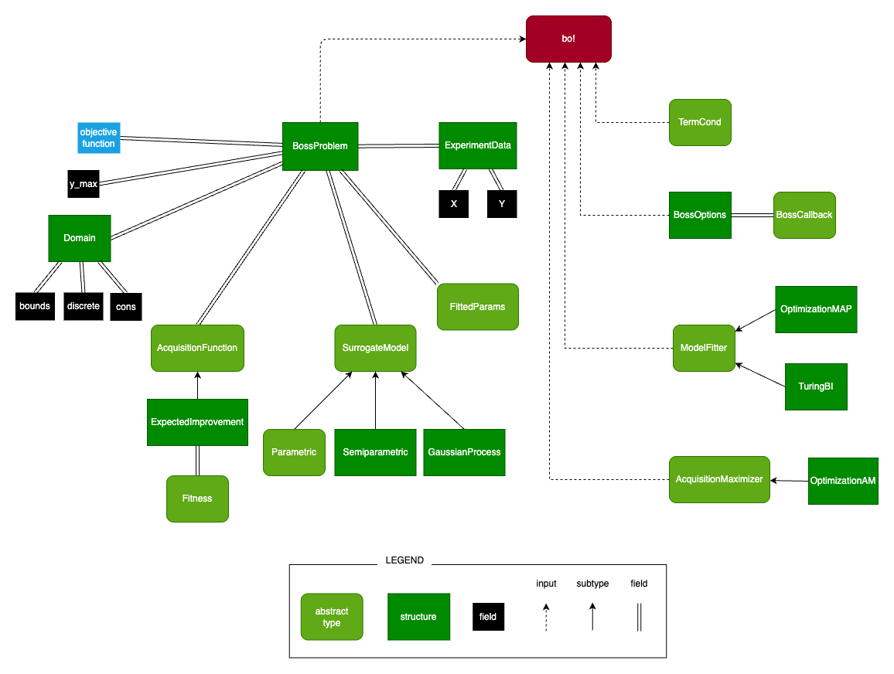

Data Types & Structures
The following diagram showcases the hierarchy of the most important inputs & settings for the main function bo!.
|  | ||||
This reminder of this page contains documentation for all exported types and structures.
Problem Definition
The BossProblem structure contains the whole optimization problem definition together with the surrogate model.
BOSS.BossProblem — TypeBossProblem(; kwargs...)Defines the whole optimization problem for the BOSS algorithm.
Problem Definition
There is some (noisy) blackbox function y = f(x) = f_true(x) + ϵ where ϵ ~ Normal.
We wish to find x ∈ domain such that fitness(f(x)) is maximized while satisfying the constraints f(x) <= y_max.
Keywords
The following keywords correspond to all fields of the BossProblem type.
The keywords marked by "(*)" are required. Note that at least a single initial data point must be provided to initialize the BossProblem.
- (*)
f::Union{Function, Missing}: The objective blackbox function. - (*)
domain::Domain: TheDomainof the inputx. y_max::AbstractVector{<:Real}: The constraints on the outputy.- (*)
acquisition::AcquisitionFunction: The acquisition function used to select the next evaluation point in each iteration. Usually contains thefitnessfunction. - (*)
model::SurrogateModel: TheSurrogateModel. params::Union{FittedParams, Nothing}: The fitted model parameters. Defaults tonothing.- (*)
data::ExperimentData: The data obtained by evaluating the objective function. consistent::Bool: True iff themodel_paramshave been fitted using the currentdata. Is set toconsistent = falseafter updating the dataset, and toconsistent = trueafter re-fitting the parameters. Defaults toconstistent = false.
See Also
Input Domain
The Domain structure is used to define the input domain $x \in \text{Domain}$. The domain is formalized as
\[\begin{aligned} & lb < x < ub \\ & (d_i = \text{true}) \implies (x_i \in \mathbb{Z}) \\ & \text{cons}(x) > 0 \;, \end{aligned}\]
where the vectors $lb,ub$ are defined by the bounds field, the vector $d$ is defined by the discrete field, and arbitrary non-box constraints are defined by the cons field of the Domain structure.
BOSS.Domain — TypeDomain(; kwargs...)Describes the optimization domain.
Keywords
The following keywords correspond to all fields of the Domain type.
The keywords marked by "(*)" are required.
- (*)
bounds::AbstractBounds: The basic box-constraints onx. This field is mandatory. discrete::AbstractVector{Bool}: Can be used to designate some dimensions of the domain as discrete.cons::Union{Nothing, Function}: Used to define arbitrary nonlinear constraints onx. Feasible pointsxmust satisfyall(cons(x) .> 0.). An appropriate acquisition maximizer which can handle nonlinear constraints must be used ifconsis provided. (SeeAcquisitionMaximizer.)
BOSS.AbstractBounds — Typeconst AbstractBounds = Tuple{<:AbstractVector{<:Real}, <:AbstractVector{<:Real}}Defines box constraints.
Example: ([0, 0], [1, 1]) isa AbstractBounds
Output Constraints
Constraints on the output y can be defined using the y_max field of the BossProblem. Providing y_max to BossProblem defines the linear constraints y < y_max.
Arbitrary nonlinear constraints can be defined by augmenting the objective function. For example to define the constraint y[1] * y[2] < c, one can define an augmented objective function
function f_c(x)
y = f(x) # the original objective function
y_c = [y..., y[1] * y[2]]
return y_c
endand use
y_max = [fill(Inf, y_dim)..., c]where y_dim is the output dimension of the original objective function f(x). Note that defining nonlinear constraints this way increases the output dimension of the modeled objective function and thus the definition of the SurrogateModel has to be modified accordingly.
Acquisition Function
The acquisition function is defined using the subtypes of AcquisitionFunction.
BOSS.AcquisitionFunction — TypeAcquisitionFunctionSpecifies the acquisition function describing the "quality" of a potential next evaluation point.
Defining custom acquisition function
To define a custom acquisition function, define a new subtype of AcquisitionFunction.
struct CustomAcq <: AcquisitionFunction ... end
All acquisition functions should implement: construct_acquisition(::CustomAcq, ::BossProblem, ::BossOptions) -> (x -> ::Real)
Acquisition functions may implement:
get_fitness(::CustomAcq) -> (y -> ::Real): Usually will return a callable instance ofFitness.
See the docs of the individual functions for more information.
See Also
Currently, only the expected improvement acuiqistion function is provided out-of-the-box.
BOSS.ExpectedImprovement — TypeExpectedImprovement(; kwargs...)The expected improvement (EI) acquisition function.
Measures the quality of a potential evaluation point x as the expected improvement in best-so-far achieved fitness by evaluating the objective function at y = f(x).
In case of constrained problems, the expected improvement is additionally weighted by the probability of feasibility of y. I.e. the probability that all(cons(y) .> 0.).
If the problem is constrained on y and no feasible point has been observed yet, then the probability of feasibility alone is returned as the acquisition function.
Rather than using the actual evaluations (xᵢ,yᵢ) from the dataset, the best-so-far achieved fitness is calculated as the maximum fitness among the means ŷᵢ of the posterior predictive distribution of the model evaluated at xᵢ. This is a simple way to handle evaluation noise which may not be suitable for problems with substantial noise.
In case Bayesian Inference of model parameters is used, the expectation of the expected improvement over the model parameter samples is calculated.
Keywords
fitness::Fitness: The fitness function mapping the outputyto the real-valued score.ϵ_samples::Int: Controls how many samples are used to approximate EI. Theϵ_sampleskeyword is ignored unlessMAPmodel fitter andNonlinFitnessare used! In case ofBImodel fitter, the number of samples is instead set equal to the number of posterior samples. In case ofLinearFitness, the expected improvement can be calculated analytically.cons_safe::Bool: If set to true, the acquisition functionacq(x)is made 'constraint-safe' by checking the bounds and constraints during each evaluation. Setcons_safetotrueif the evaluation of the model at exterior points may cause errors or nonsensical values. You may setcons_safetofalseif the evaluation of the model at exterior points can provide useful information to the acquisition maximizer and does not cause errors. Defaults totrue.
Custom acquisition functions can be defined by subtyping the AcquisitionFunction type.
Fitness
Subtype of Fitness are used to define the fitness function $\text{fit}(y) \rightarrow \mathbb{R}$ and is passed to the AcquisitionFunction.
BOSS.Fitness — TypeFitnessAn abstract type for a fitness function measuring the quality of an output y of the objective function.
Fitness is used by (most) AcquisitionFunctions to determine promising points for future evaluations.
All fitness functions should implement:
(::CustomFitness)(y::AbstractVector{<:Real}) -> fitness::Real
See also: LinFitness, NonlinFitness, AcquisitionFunction
(Note that the acquisition function does not have to include Fitness. For example, it may not make sense to include Fitness in specialized acquisition functions for active learning tasks. Acquisition function for optimization tasks should usually work with Fitness.)
The LinFitness can be used to define a simple fitness function depending linearly on the objective function outputs.
\[\text{fit}(y) = \alpha^T y\]
Using LinFitness instead of NonlinFitness may allow for simpler/faster computation of some acquisition functions.
BOSS.LinFitness — TypeLinFitness(coefs::AbstractVector{<:Real})Used to define a linear fitness function measuring the quality of an output y of the objective function.
May provide better performance than the more general NonlinFitness as some acquisition functions can be calculated analytically with linear fitness functions whereas this may not be possible with a nonlinear fitness function.
See also: NonlinFitness
Example
A fitness function f(y) = y[1] + a * y[2] + b * y[3] can be defined as:
julia> LinFitness([1., a, b])The NonlinFitness can be used to define an arbitrary fitness function.
\[\text{fit}(y) \rightarrow \mathbb{R}\]
BOSS.NonlinFitness — TypeNonlinFitness(fitness::Function)Used to define a general nonlinear fitness function measuring the quality of an output y of the objective function.
If your fitness function is linear, use LinFitness which may provide better performance.
See also: LinFitness
Example
julia> NonlinFitness(y -> cos(y[1]) + sin(y[2]))Surrogate Model
The surrogate model is defined using subtypes of SurrogateModel and passed to the BossProblem.
BOSS.SurrogateModel — TypeSurrogateModelAn abstract type for a surrogate model approximating the objective function.
Defining Custom Surrogate Model
To define a custom surrogate model, define a new subtype struct CustomModel <: SurrogateModel ... end as well as the other structures and methods described below.
The inputs in square brackets [...] are optional and can be used to provide additional data. It is prefferable to define the methods without the optional inputs if possible.
See the docstrings of the individual functions for more information.
Model Posterior Methods
Each model should define at least one of the following posterior constructors:
model_posterior(::SurrogateModel, ::ModelParams, ::ExperimentData) -> ::ModelPosteriormodel_posterior_slice(::SurrogateModel, ::ModelParams, ::ExperimentData, slice::Int) -> ::ModelPosteriorSlice
and will usually implement the corresponding posterior type(s):
struct CustomPosterior <: ModelPosterior{CustomModel} ... endstruct CustomPosteriorSlice <: ModelPosteriorSlice{CustomModel} ... end
However, the model may reuse a posterior type defined for a different model.
Defining both ModelPosterior and ModelPosteriorSlice is also possible, and can be used to provide a more efficient implementation of the posterior.
Additionally, the API described in the docstring(s) of the ModelPosterior or/and ModelPosteriorSlice type(s) must be implemented for new posterior types.
Model Parameters Methods
Each model should define a new type:
struct CustomParams <: ModelParams{CustomModel} ... end
Each model should implement the following methods used for parameter estimation:
data_loglike(::SurrogateModel, ::ExperimentData) -> (::ModelParams -> ::Real)params_loglike(::SurrogateModel, [::ExperimentData]) -> (::ModelParams -> ::Real)_params_sampler(::SurrogateModel, [::ExperimentData]) -> (::AbstractRNG -> ::ModelParams)vectorizer(::SurrogateModel, [::ExperimentData]) -> (vectorize, devectorize)wherevectorize(::ModelParams) -> ::AbstractVector{<:Real}anddevectorize(::ModelParams, ::AbstractVector{<:Real}) -> ::ModelParamsbijector(::SurrogateModel, [::ExperimentData]) -> ::Bijectors.Transform
Additionally, the following methods are provided and need not be implemented:
model_loglike(::SurrogateModel, ::ExperimentData) -> (::ModelParams -> ::Real)params_sampler(::SurrogateModel, ::ExperimentData) -> ([::AbstractRNG] -> ::ModelParams)
Utility Methods
Models may implement:
make_discrete(model::SurrogateModel, discrete::AbstractVector{Bool}) -> discrete_model::SurrogateModelsliceable(::SurrogateModel) = true(defaults tofalse)
If sliceable(::SurrogateModel) == true, then the model should additionally implement:
slice(model::SurrogateModel, slice::Int) -> model_slice::SurrogateModelslice(params::ModelParams, slice::Int) -> params_slice::ModelParamsjoin_slices(slices::AbstractVector{ModelParams}) -> params::ModelParams
Defining the SurrogateModel as sliceable allows for significantly more efficient parameter estimation, but is generally not possible for all models.
SurrogateModels implementing model_posterior_slice will usually be sliceable, whereas models implementing model_posterior will not, but the API does not require this.
See Also
LinearModel, NonlinearModel, GaussianProcess, Semiparametric
The LinearModel and NonlinearModel structures are used to define parametric models.
(Some compuatations are simpler/faster with linear model, so the LinearModel might provide better performance in the future. This functionality is not implemented yet, so using the NonlinearModel is equiavalent for now.)
BOSS.Parametric — TypeParametric{N}An abstract type for parametric surrogate models.
The model function can be reconstructed using the following functions:
(::Parametric)() -> ((x, θ) -> y)(::Parametric)(θ::AbstractVector{<:Real}) -> (x -> y)(::Parametric)(x::AbstractVector{<:Real}, θ::AbstractVector{<:Real}) -> y
The parametric type N <: Union{Nothing, NoiseStdPriors} determines whether the model is deterministic or probabilistic.
A deterministic version of a Parametric model has N = nothing, does not implement the SurrogateModel API and cannot be used as a standalone model. It is mainly used as a part of the Semiparametric model.
A probabilistic version of a Parametric model has defined noise_std_priors, implements the whole SurrogateModel API, and can be used as a standalone model.
See also: LinearModel, NonlinearModel
BOSS.LinearModel — TypeLinearModel(; kwargs...)A parametric surrogate model linear in its parameters.
This model definition will provide better performance than the more general 'NonlinearModel' in the future. This feature is not implemented yet so it is equivalent to using NonlinearModel for now.
The linear model is defined as
ϕs = lift(x)
y = [θs[i]' * ϕs[i] for i in 1:m]where
x = [x₁, ..., xₙ]
y = [y₁, ..., yₘ]
θs = [θ₁, ..., θₘ], θᵢ = [θᵢ₁, ..., θᵢₚ]
ϕs = [ϕ₁, ..., ϕₘ], ϕᵢ = [ϕᵢ₁, ..., ϕᵢₚ]and $n, m, p ∈ R$.
Keywords
lift::Function: Defines theliftfunction(::Vector{<:Real}) -> (::Vector{Vector{<:Real}})according to the definition above.theta_priors::ThetaPriors: The prior distributions for the parameters[θ₁₁, ..., θ₁ₚ, ..., θₘ₁, ..., θₘₚ]according to the definition above.discrete::Union{Nothing, AbstractVector{Bool}}: A vector of booleans indicating which dimensions ofxare discrete. Ifdiscrete = nothing, all dimensions are continuous. Defaults tonothing.noise_std_priors::Union{Nothing, NoiseStdPriors}: The prior distributions of the noise standard deviations of eachydimension. If the model is used by itself, thenoise_std_priorsmust be defined. If the model is used as a part of theSemiparametricmodel, thenoise_std_priorsmust be left undefined, as the evaluation noise is modeled by theGaussianProcessin that case.
BOSS.NonlinearModel — TypeNonlinearModel(; kwargs...)A parametric surrogate model.
If your model is linear, you can use LinearModel which will provide better performance in the future. (Not yet implemented.)
Define the model as y = predict(x, θ) where θ are the model parameters.
Keywords
predict::Function: Thepredictfunction according to the definition above.theta_priors::ThetaPriors: The prior distributions for the model parameters. function during optimization. Defaults tonothingmeaning all parameters are real-valued.discrete::Union{Nothing, AbstractVector{Bool}}: A vector of booleans indicating which dimensions ofxare discrete. Ifdiscrete = nothing, all dimensions are continuous. Defaults tonothing.noise_std_priors::Union{Nothing, NoiseStdPriors}: The prior distributions of the noise standard deviations of eachydimension. If the model is used by itself, thenoise_std_priorsmust be defined. If the model is used as a part of theSemiparametricmodel, thenoise_std_priorsmust be left undefined, as the evaluation noise is modeled by theGaussianProcessin that case.
BOSS.ParametricParams — TypeParametricParams(θ, σ)The parameters of the Parametric model.
Parameters
θ::AbstractVector{<:Real}: The parameters of theParametricmodel.σ::AbstractVector{<:Real}: The noise standard deviations.
The GaussianProcess structure is used to define a Gaussian process model. See [1] for more information about Gaussian processes.
BOSS.Nonparametric — TypeNonparametricAn alias for GaussianProcess.
BOSS.GaussianProcess — TypeGaussianProcess(; kwargs...)A Gaussian Process surrogate model. Each output dimension is modeled by a separate independent process.
Keywords
mean::Union{Nothing, AbstractVector{<:Real}, Function}: Used as the mean function for the GP. Defaults tonothingequivalent tox -> zeros(y_dim).kernel::Kernel: The kernel used in the GP. Defaults to theMatern32Kernel().lengthscale_priors::LengthscalePriors: The prior distributions for the length scales of the GP. Thelengthscale_priorsshould be a vector ofy_dimx_dim-variate distributions wherex_dimandy_dimare the dimensions of the input and output of the model respectively.amplitude_priors::AmplitudePriors: The prior distributions for the amplitude hyperparameters of the GP. Theamplitude_priorsshould be a vector ofy_dimunivariate distributions.noise_std_priors::NoiseStdPriors: The prior distributions of the noise standard deviations of eachydimension.
BOSS.GaussianProcessParams — TypeGaussianProcessParams(λ, α, σ)The parameters of the GaussianProcess model.
Parameters
λ::AbstractMatrix{<:Real}: The length scales of the GP.α::AbstractVector{<:Real}: The amplitudes of the GP.σ::AbstractVector{<:Real}: The noise standard deviations.
The Semiparametric structure is used to define a semiparametric model combining the parametric and nonparametric (Gaussian process) models.
BOSS.Semiparametric — TypeSemiparametric(; kwargs...)A semiparametric surrogate model (a combination of a Parametric model and a GaussianProcess).
The parametric model is used as the mean of the Gaussian Process and the evaluation noise is modeled by the Gaussian Process. All parameters of the models are estimated simultaneously.
Keywords
parametric::Parametric: The parametric model used as the GP mean function.nonparametric::Nonparametric{Nothing}: The outer GP model without mean.
Note that the parametric model should be defined without noise priors, and the nonparametric model should be defined without mean function.
BOSS.SemiparametricParams — TypeSemiparametricParams(θ, λ, α, σ)The parameters of the [Semiparametric]@ref model.
Parameters
θ::AbstractVector{<:Real}: The parameters of the parametric model.λ::AbstractMatrix{<:Real}: The length scales of the GP.α::AbstractVector{<:Real}: The amplitudes of the GP.σ::AbstractVector{<:Real}: The noise standard deviations.
Other provided surrogate models include: NonstationaryGP
BOSS.NonstationaryGP — TypeNonstationaryGP(; kwargs...)A Gaussian Process model with an option to model the length scales, amplitudes, and/or noise standard deviations with additional GPs.
Keywords
mean::Union{Nothing, AbstractVector{<:Real}, Function}: Used as the mean function for the GP. Defaults tonothingequivalent tox -> zeros(y_dim).lengthscale_model::Union{LengthscalePriors, AbstractMatrix{<:ParametrizedGP}}: The model used for the length scales of the GP. Define it asLengthscalePriorsto use standard stationary lengthscales, or define it as a matrix ofParametrizedGPto use nonstationary lengthscales.amplitude_model::Union{AmplitudePriors, AbstractVector{<:ParametrizedGP}}: The model used for the amplitude hyperparameters of the GP. Define it asAmplitudePriorsto use standard stationary amplitudes, or define it as a vector ofParametrizedGPto use nonstationary amplitudes.noise_std_model::Union{NoiseStdPriors, AbstractVector{<:ParametrizedGP}}: The model used for the noise standard deviations of the GP. Define it asNoiseStdPriorsto use standard stationary noise stds, or define it as a vector ofParametrizedGPto use nonstationary noise stds.
BOSS.NonstationaryGPParams — TypeNonstationaryGPParams(λ, α, σ)The parameters of the NonstationaryGP model.
Parameters
λ::AbstractMatrix{<:Union{Real, ParametrizedGPParams}}: The length scales of the GP, or the parameters of theParametrizedGPs used to model nonstationary lengthscales.α::AbstractVector{<:Union{Real, ParametrizedGPParams}}: The amplitudes of the GP, or the parameters of theParametrizedGPs used to model nonstationary amplitudes.σ::AbstractVector{<:Union{Real, ParametrizedGPParams}}: The noise standard deviations of the GP, or the parameters of theParametrizedGPs used to model nonstationary noise stds.
Custom surrogate models can be defined by subtyping the SurrogateModel type.
Model Posterior
The functions model_posterior and model_posterior_slice can be used to obtain an instance of the ModelPosterior and ModelPosteriorSlice structures.
BOSS.AbstractModelPosterior — TypeAbstractModelPosterior{<:SurrogateModel}An abstract model posterior. The subtypes include ModelPosterior and ModelPosteriorSlice.
BOSS.ModelPosterior — TypeModelPosterior{M<:SurrogateModel}Contains precomputed quantities for the evaluation of the predictive posterior of the SurrogateModel M.
Each subtype of ModelPosterior should implement:
mean(::ModelPosterior, ::AbstractVector{<:Real}) -> ::AbstractVector{<:Real}mean(::ModelPosterior, ::AbstractMatrix{<:Real}) -> ::AbstractMatrix{<:Real}var(::ModelPosterior, ::AbstractVector{<:Real}) -> ::AbstractVector{<:Real}var(::ModelPosterior, ::AbstractMatrix{<:Real}) -> ::AbstractMatrix{<:Real}cov(::ModelPosterior, ::AbstractMatrix{<:Real}) -> ::AbstractArray{<:Real, 3}
and may implement corresponding methods:
mean_and_var(::ModelPosterior, ::AbstractVector{<:Real}) -> ::Tuple{...}mean_and_var(::ModelPosterior, ::AbstractMatrix{<:Real}) -> ::Tuple{...}mean_and_cov(::ModelPosterior, ::AbstractMatrix{<:Real}) -> ::Tuple{...}
Additionally, the following methods are provided and need not be implemented:
std(::ModelPosterior, ::AbstractVector{<:Real}) -> ::AbstractVector{<:Real}std(::ModelPosterior, ::AbstractMatrix{<:Real}) -> ::AbstractMatrix{<:Real}mean_and_std(::ModelPosterior, ::AbstractVector{<:Real}) -> ::Tuple{...}mean_and_std(::ModelPosterior, ::AbstractMatrix{<:Real}) -> ::Tuple{...}average_mean(::AbstractVector{<:ModelPosterior}, ::AbstractVector{<:Real})average_mean(::AbstractVector{<:ModelPosterior}, ::AbstractMatrix{<:Real})
See SurrogateModel for more information.
See also: ModelPosteriorSlice
BOSS.ModelPosteriorSlice — TypeModelPosteriorSlice{M<:SurrogateModel}Contains precomputed quantities for the evaluation of the predictive posterior of a single output dimension of the SurrogateModel M.
Each subtype of ModelPosteriorSlice should implement:
mean(::ModelPosteriorSlice, ::AbstractVector{<:Real}) -> ::Realmean(::ModelPosteriorSlice, ::AbstractMatrix{<:Real}) -> ::AbstractVector{<:Real}var(::ModelPosteriorSlice, ::AbstractVector{<:Real}) -> ::Realvar(::ModelPosteriorSlice, ::AbstractMatrix{<:Real}) -> ::AbstractVector{<:Real}cov(::ModelPosteriorSlice, ::AbstractMatrix{<:Real}) -> ::AbstractMatrix{<:Real}
and may implement corresponding methods:
mean_and_var(::ModelPosteriorSlice, ::AbstractVector{<:Real}) -> ::Tuple{...}mean_and_var(::ModelPosteriorSlice, ::AbstractMatrix{<:Real}) -> ::Tuple{...}mean_and_cov(::ModelPosteriorSlice, ::AbstractMatrix{<:Real}) -> ::Tuple{...}
Additionally, the following methods are provided and need not be implemented:
std(::ModelPosteriorSlice, ::AbstractVector{<:Real}) -> ::Realstd(::ModelPosteriorSlice, ::AbstractMatrix{<:Real}) -> ::AbstractVector{<:Real}mean_and_std(::ModelPosteriorSlice, ::AbstractVector{<:Real}) -> ::Tuple{...}mean_and_std(::ModelPosteriorSlice, ::AbstractMatrix{<:Real}) -> ::Tuple{...}average_mean(::AbstractVector{<:ModelPosteriorSlice}, ::AbstractVector{<:Real})average_mean(::AbstractVector{<:ModelPosteriorSlice}, ::AbstractMatrix{<:Real})
See SurrogateModel for more information.
See also: ModelPosterior
The model posterior can be evaluated by using the methods mean, std, var, cov, mean_and_std, mean_and_var, and mean_and_cov defined for the ModelPosterior and ModelPosteriorSlice types.
Model Parameters
Each subtype of SurrogateModel has its own subtype of ModelParams defined, which stores all its (hyper)parameters.
BOSS.ModelParams — TypeModelParams{M<:SurrogateModel}Contains all parameters of the SurrogateModel M.
See SurrogateModel for more information.
The estimated model parameters are stored as subtypes of FittedParams in the params field of the BossProblem, and contain additional information about the way the parameters have been obtained.
BOSS.FittedParams — TypeFittedParams{M<:SurrogateModel}The subtypes of FittedParams contain ModelParams fitted to the data via different methods.
There are two abstract subtypes of FittedParams:
UniFittedParams: Contains a singleModelParamsinstance fitted to the data.MultiFittedParams: Contains multipleModelParamssamples sampled according to the data.
The contained ModelParams can be obtained via the get_params(::FittedParams) function, which return either a single ModelParams object or a vector of ModelParams objects.
All subtypes of UniFittedParams implement:
get_params(::FittedParams) -> ::ModelParamsslice(::FittedParams, idx::Int) -> ::FittedParams
All subtypes of MultiFittedParams implement:
get_params(::FittedParams) -> ::Vector{<:ModelParams}slice(::FittedParams, idx::Int) -> ::FittedParams
See Also
Different ModelFitters create different subtypes of FittedParams. For example, MAP model fitters result in the MAPParams containing the MAP ModelParams, and variational parameter samplers results in the BIParams containing multiple posterior ModelParams samples.
BOSS.MAPParams — TypeMAPParams{M<:SurrogateModel}ModelParams estimated via MAP estimation.
Keywords
params::ModelParams{M}: The fitted model parameters.loglike::Float64: The log likelihood of the fitted parameters.
BOSS.BIParams — TypeBIParams{M<:SurrogateModel, P<:ModelParams{M}}Contains ModelParams samples obtained via (approximate) Bayesian inference.
The individual ModelParams samples can be obtained by iterating over the BIParams object.
Keywords
samples::Vector{P}: A vector of the individual model parameter samples.
BOSS.RandomParams — TypeRandomParams{M<:SurrogateModel}A single random ModelParams sample from the prior.
Keywords
params::ModelParams{M}: The random model parameters.
BOSS.FixedParams — TypeFixedParams{M<:SurrogateModel}Fixed ModelParams values for a given SurrogateModel.
Keywords
params::ModelParams{M}: The parameter values.
Experiment Data
The data from all past objective function evaluations are stored in subtypes of the ExperimentData abstract type. They are also used to provide the intial data to BossProblem.
BOSS.ExperimentData — TypeExperimentDataAn abstract type for different types storing (and possibly preprocessing) the experiment data.
Interface
All subtypes of ExperimentData should contain the following fields:
X::AbstractMatrix{<:Real}: The input data matrix.Y::AbstractMatrix{<:Real}: The (possibly pre-processed) output data matrix.
All subtypes of ExperimentData should implement the following methods:
augment_dataset(::ExperimentData, X, Y) -> ::ExperimentData: Returns a newExperimentDatainstance containing the current dataset augmented by the provided dataX,Y.update_dataset(::ExperimentData, X, Y) -> ::ExperimentData: Returns a newExperimentDatainstance containing only the new provided dataX,Y.slice(::ExperimentData, idx::Int) -> ::ExperimentData: Returns a newExperimentDatainstance containing only the output dimension specified by theidxindex.
The data can be augmented by using the augment_dataset function, or replaced by the update_dataset function.
BOSS.augment_dataset — Functionaugment_dataset(::ExperimentData, X, Y) -> ::ExperimentDataReturn a new ExperimentData instance containing the old dataset augmented by the provided data X, Y.
See also: update_dataset
BOSS.update_dataset — Functionupdate_dataset(::ExperimentData, X, Y) -> ::ExperimentDataReturn a new ExperimentData instance containing only the new provided data X, Y.
See also: augment_dataset
The simples subtype of ExperimentData is the SimpleData structure, which simply stored the evaluated inputs and the observed outputs.
BOSS.SimpleData — TypeSimpleData(X, Y)Stores all the data collected during the optimization. Performs no additional preprocessing.
Fields
X::AbstractMatrix{<:Real}: Contains the objective function inputs as columns.Y::AbstractMatrix{<:Real}: Contains the objective function outputs as columns.
More advanced ExperimentData subtypes include the following;
BOSS.NormalizedData — TypeNormalizedData(X, Y_orig; y_lb, y_ub)
NormalizedData(::SimpleData; y_lb, y_ub)Stores all the data collected during the optimization.
Normalizes the output data according to the provided y_lb, y_ub vectors.
Fields
X::AbstractMatrix{<:Real}: The normalized input data matrix.Y::AbstractMatrix{<:Real}: The normalized output data matrix.Y_orig::AbstractMatrix{<:Real}: The original output data matrix containing the true observed responses.y_lb::Union{Nothing, AbstractVector{<:Real}}: Lower bounds of the output data. Defaults tonothing.y_ub::Union{Nothing, AbstractVector{<:Real}}: Upper bounds of the output data. Defaults tonothing.
Model Fitter
The ModelFitter type defines the algorithm used to estimate the model (hyper)parameters.
BOSS.ModelFitter — TypeModelFitter{T<:FittedParams}Specifies the library/algorithm used for model parameter estimation. The parametric type T specifies the subtype of FittedParams returned by the model fitter.
Defining Custom Model Fitter
Define a custom model fitter algorithm by defining a new subtype of ModelFitter.
Example: struct CustomFitter <: ModelFitter{MAPParams} ... end
All model fitters should implement: `estimateparameters(modelfitter::CustomFitter, problem::BossProblem, options::BossOptions; return_all::Bool) -> ::FittedParams
See Also
The OptimizationMAP model fitter can be used to utilize any optimization algorithm from the Optimization.jl package in order to find the MAP estimate of the (hyper)parameters. (See the example usage.)
BOSS.OptimizationMAP — TypeOptimizationMAP(; kwargs...)Finds the MAP estimate of the model parameters and hyperparameters using the Optimization.jl package.
To use this model fitter, first add one of the Optimization.jl packages (e.g. OptimizationPRIMA) to load some optimization algorithms which are passed to the OptimizationMAP constructor.
Keywords
algorithm::Any: Defines the optimization algorithm.multistart::Union{Int, AbstractVector{<:ModelParams}}: The number of optimization restarts, or a vector ofModelParamscontaining initial (hyper)parameter values for the optimization runs.parallel::Bool: Ifparallel=truethen the individual restarts are run in parallel.static_schedule::Bool: Ifstatic_schedule=truethen the:staticschedule is used for parallelization. This is makes the parallel tasks sticky (non-migrating), but can decrease performance.autodiff::Union{SciMLBase.AbstractADType, Nothing}:: The automatic differentiation module passed toOptimization.OptimizationFunction.kwargs::Base.Pairs{Symbol, <:Any}: Other kwargs are passed to the optimization algorithm.
The TuringBI model fitter can be used to utilize the Turing.jl library in order to sample the (hyper)parameters from the posterior given by the current dataset.
BOSS.TuringBI — TypeTuringBI(; kwargs...)Samples the model parameters and hyperparameters using the Turing.jl package.
To use this model fitter, first add the Turing.jl package.
Keywords
sampler::Any: The sampling algorithm used to draw the samples.warmup::Int: The amount of initial unused 'warmup' samples in each chain.samples_in_chain::Int: The amount of samples used from each chain.chain_count::Int: The amount of independent chains sampled.leap_size: Everyleap_size-th sample is used from each chain. (To avoid correlated samples.)parallel: Ifparallel=truethen the chains are sampled in parallel.
Sampling Process
In each sampled chain;
- The first
warmupsamples are discarded. - From the following
leap_size * samples_in_chainsamples eachleap_size-th is kept.
Then the samples from all chains are concatenated and returned.
Total drawn samples: 'chaincount * (warmup + leapsize * samplesinchain)' Total returned samples: 'chaincount * samplesin_chain'
The SamplingMAP model fitter preforms MAP estimation by sampling the parameters from their priors and maximizing the posterior probability over the samples. This is a trivial model fitter suitable for simple experimentation with BOSS.jl and/or Bayesian optimization. A more sophisticated model fitter such as OptimizationMAP or TuringBI should be used to solve real problems.
BOSS.SamplingMAP — TypeSamplingMAP()Optimizes the model parameters by sampling them from their prior distributions and selecting the best sample in sense of MAP.
Keywords
samples::Int: The number of drawn samples.parallel::Bool: The sampling is performed in parallel ifparallel=true.
The RandomFitter model fitter samples random parameter values from their priors. It does NOT optimize for the most probable parameters in any way. This model fitter is provided solely for easy experimentation with BOSS.jl and should not be used to solve problems.
BOSS.RandomFitter — TypeRandomFitter()Returns random model parameters sampled from their respective priors.
Can be useful with RandomSelectAM to avoid unnecessary model parameter estimations.
The SampleOptMAP model fitter combines the SamplingMAP and OptimizationMAP. It first samples many model parameter samples from their priors, and subsequently runs multiple optimization runs initiated at the best samples.
BOSS.SampleOptMAP — TypeSampleOptMAP(; kwargs...)
SampleOptMAP(::SamplingMAP, ::OptimizationMAP)Combines SamplingMAP and OptimizationMAP to first sample many parameter samples from the prior, and subsequently start multiple optimization runs initialized from the best samples.
Keywords
samples::Int: The number of drawn samples.algorithm::Any: Defines the optimization algorithm.multistart::Int: The number of optimization restarts.parallel::Bool: Ifparallel=true, then both the sampling and the optimization are performed in parallel.
Custom model fitters can be defined by subtyping the ModelFitter type.
Acquisition Maximizer
The AcquisitionMaximizer type is used to define the algorithm used to maximize the acquisition function.
BOSS.AcquisitionMaximizer — TypeAcquisitionMaximizerSpecifies the library/algorithm used for acquisition function optimization.
Defining Custom Acquisition Maximizer
To define a custom acquisition maximizer, define a new subtype of AcquisitionMaximizer.
struct CustomAlg <: AcquisitionMaximizer ... end
All acquisition maximizers should implement: maximize_acquisition(acq_maximizer::CustomAlg, problem::BossProblem, options::BossOptions) -> (x, val).
This method should return a tuple (x, val). The returned vector x is the point of the input domain which maximizes the given acquisition function acq (as a vector), or a batch of points (as a column-wise matrix). The returned val is the acquisition value acq(x), or the values acq.(eachcol(x)) for each point of the batch, or nothing (depending on the acquisition maximizer implementation).
See also: OptimizationAM
The OptimizationAM can be used to utilize any optimization algorithm from the Optimization.jl package.
BOSS.OptimizationAM — TypeOptimizationAM(; kwargs...)Maximizes the acquisition function using the Optimization.jl library.
Can handle constraints on x if according optimization algorithm is selected.
Keywords
algorithm::Any: Defines the optimization algorithm.multistart::Union{Int, AbstractMatrix{<:Real}}: The number of optimization restarts, or a matrix of optimization intial points as columns.parallel::Bool: Ifparallel=truethen the individual restarts are run in parallel.static_schedule::Bool: Ifstatic_schedule=truethen the:staticschedule is used for parallelization. This is makes the parallel tasks sticky (non-migrating), but can decrease performance.autodiff:SciMLBase.AbstractADType:: The automatic differentiation module passed toOptimization.OptimizationFunction.kwargs...: Other kwargs are passed to the optimization algorithm.
The GridAM maximizes the acquisition function by evaluating all points on a fixed grid of points. This is a trivial acquisition maximizer suitable for simple experimentation with BOSS.jl and/or Bayesian optimization. More sophisticated acquisition maximizers such as OptimizationAM should be used to solve real problems.
BOSS.GridAM — TypeGridAM(kwargs...)Maximizes the acquisition function by checking a fine grid of points from the domain.
Extremely simple optimizer which can be used for simple problems or for debugging. Not suitable for problems with high dimensional domain.
Can be used with constraints on x.
Keywords
problem::BossProblem: Provide your defined optimization problem.steps::Vector{Float64}: Defines the size of the grid gaps in eachxdimension.parallel::Bool: Ifparallel=true, the optimization is parallelized. Defaults totrue.shuffle::Bool: Ifshuffle=true, the grid points are shuffled before each optimization. Defaults totrue.
The SamplingAM samples random candidate points from the given x_prior distribution and selects the sample with maximal acquisition value.
BOSS.SamplingAM — TypeSamplingAM(; kwargs...)Optimizes the acquisition function by sampling candidates from the user-provided prior, and returning the sample with the highest acquisition value.
Keywords
x_prior::MultivariateDistribution: The prior over the input domain used to sample candidates.samples::Int: The number of samples to be drawn and evaluated.parallel::Bool: Ifparallel=truethen the sampling is parallelized. Defaults totrue.
The RandomAM simply returns a random point. It does NOT perform any optimization. This acquisition maximizer is provided solely for easy experimentation with BOSS.jl and should not be used to solve problems.
BOSS.RandomAM — TypeRandomAM()Selects a random interior point instead of maximizing the acquisition function. Can be used for method comparison.
Can handle constraints on x, but does so by generating random points in the box domain until a point satisfying the constraints is found. Therefore it can take a long time or even get stuck if the constraints are very tight.
The GivenPointAM always return the same evaluation point predefined by the user. The GivenSequenceAM returns the predefined sequence of evaluation points and throws an error once it runs out of points. These dummy acquisition maximizers are useful for controlled experiments.
BOSS.GivenPointAM — TypeGivenPointAM(x::Vector{...})A dummy acquisition maximizer that always returns predefined point x.
See Also
BOSS.GivenSequenceAM — TypeGivenSequenceAM(X::Matrix{...})
GivenSequenceAM(X::Vector{Vector{...}})A dummy acquisition maximizer that returns the predefined sequence of points in the given order. The maximizer throws an error if it runs out of points in the sequence.
See Also
The SampleOptAM samples many candidate points from the given x_prior distribution, and subsequently performs multiple optimization runs initiated from the best samples.
BOSS.SampleOptAM — TypeSampleOptAM(; kwargs...)Optimizes the acquisition function by first sampling candidates from the user-provided prior, and then running multiple optimization runs initiated from the samples with the highest acquisition values.
Keywords
x_prior::MultivariateDistribution: The prior over the input domain used to sample candidates.samples::Int: The number of samples to be drawn and evaluated.algorithm::Any: Defines the optimization algorithm.multistart::Int: The number of optimization restarts.parallel::Bool: Ifparallel=true, both the sampling and individual optimization runs are performed in parallel.autodiff:SciMLBase.AbstractADType:: The automatic differentiation module passed toOptimization.OptimizationFunction.kwargs...: Other kwargs are passed to the optimization algorithm.
The SequentialBatchAM can be used as a wrapper of any of the other acquisition maximizers. It returns a batch of promising points for future evaluations instead of a single point, and thus allows for evaluation of the objective function in batches.
BOSS.SequentialBatchAM — TypeSequentialBatchAM(::AcquisitionMaximizer, ::Int)
SequentialBatchAM(; am, batch_size)Provides multiple candidates for batched objective function evaluation.
Selects the candidates sequentially by iterating the following steps:
- Use the 'inner' acquisition maximizer to select a candidate
x.
- Use the 'inner' acquisition maximizer to select a candidate
- Extend the dataset with a 'speculative' new data point
xand the posterior predictive mean of the surrogateŷ.- If
batch_sizecandidates have been selected, return them.
- If
Keywords
am::AcquisitionMaximizer: The inner acquisition maximizer.batch_size::Int: The number of candidates to be selected.
Custom acquisitions maximizers can be defined by subtyping the AcquisitionMaximizer type.
Termination Conditions
The TermCond type is used to define the termination condition of the BO procedure.
BOSS.TermCond — TypeTermCondSpecifies the termination condition of the whole BOSS algorithm. Inherit this type to define a custom termination condition.
Example: struct CustomCond <: TermCond ... end
All termination conditions should implement: (cond::CustomCond)(problem::BossProblem)
This method should return true to keep the optimization running and return false once the optimization is to be terminated.
See also: IterLimit
The IterLimit terminates the procedure after a predefined number of iterations.
BOSS.IterLimit — TypeIterLimit(iter_max::Int)Terminates the BOSS algorithm after predefined number of iterations.
See also: bo!
The NoLimit can be used to let the algorithm run indefinitely.
BOSS.NoLimit — TypeNoLimit()Never terminates.
Custom termination conditions can be defined by subtyping the TermCond type.
Miscellaneous
The BossOptions structure is used to define miscellaneous hyperparameters of the BOSS.jl package.
BOSS.BossOptions — TypeBossOptions(; kwargs...)Stores miscellaneous settings of the BOSS algorithm.
Keywords
info::Bool: Settinginfo=falsesilences the BOSS algorithm.debug::Bool: Setdebug=trueto print stactraces of caught optimization errors.parallel_evals::Symbol: Possible values::serial,:parallel,:distributed. Defaults to:parallel. Determines whether to run multiple objective function evaluations within one batch in serial, parallel, or distributed fashion. (Only has an effect if batching AM is used.)callback::BossCallback: If provided,callback(::BossProblem; kwargs...)will be called before the BO procedure starts and after every iteration.
See also: bo!
The BossCallback type can be subtyped to define a custom callback, which is called in every iteration of the BO procedure (and once before the procedure starts). Pass the callback to the BossOptions.
BOSS.BossCallback — TypeBossCallbackIf a BossCallback is provided to BossOptions, the callback is called once before the BO procedure starts, and after each iteration.
All callbacks should implement:
- (::CustomCallback)(::BossProblem; ::ModelFitter, ::AcquisitionMaximizer, ::TermCond, ::BossOptions, first::Bool, )
The kwarg first is true only on the first callback before the BO procedure starts.
See PlotCallback for an example usage of a callback for plotting.
BOSS.NoCallback — TypeNoCallback()Does nothing.
The provided PlotCallback plots the state of the BO procedure in every iteration. It currently only supports one-dimensional input spaces.
BOSS.PlotCallback — TypePlotOptions(Plots; kwargs...)If PlotOptions is passed to BossOptions as callback, the state of the optimization problem is plotted in each iteration. Only works with one-dimensional x domains but supports multi-dimensional y.
Arguments
Plots::Module: Evaluateusing Plotsand pass thePlotsmodule toPlotsOptions.
Keywords
f_true::Union{Nothing, Function}: The true objective function to be plotted.points::Int: The number of points in each plotted function.xaxis::Symbol: Used to change the x axis scale (:identity,:log).yaxis::Symbol: Used to change the y axis scale (:identity,:log).title::String: The plot title.
References
[1] Bobak Shahriari et al. “Taking the human out of the loop: A review of Bayesian optimization”. In: Proceedings of the IEEE 104.1 (2015), pp. 148–175